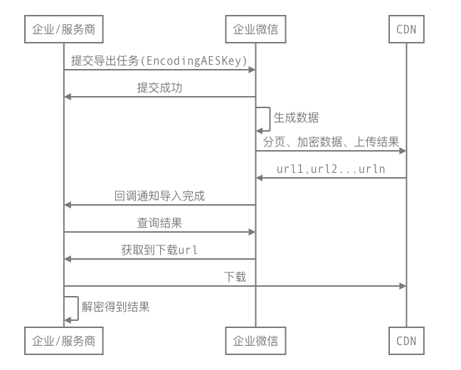

目录
概述接口列表概述
对于数据量大的企业，企业微信提供异步导出、CDN下载数据的方式来获取通讯录数据。

企业通讯录安全特别重要，企业微信将持续升级加固通讯录接口的安全机制，以下是关键的变更点：
- 从2022年6月20号20点开始，除通讯录同步以外的基础应用（如客户联系、微信客服、会话存档、日程等），以及新创建的自建应用与代开发应用，调用导出接口时，不再返回以下字段：头像、性别、手机、邮箱、企业邮箱、员工个人二维码、地址，应用需要通过oauth2手工授权的方式获取管理员与员工本人授权的字段。
- 【重要】从2022年8月15日10点开始，“企业管理后台 - 管理工具 - 通讯录同步”的新增IP将不能再调用导出接口，企业可通过「获取成员ID列表」和「获取部门ID列表」接口获取userid和部门ID列表。查看调整详情。